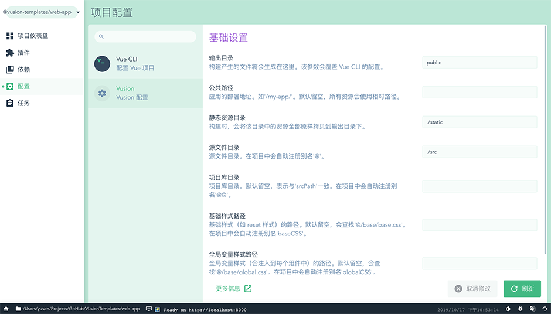

<div :class="$style.root">
    <div :class="$style.main">
        <u-feature size="huge" name="cloud-admin" title="网易云中后台管理系统">
            
            <template slot="buttons">
                <u-feature-button role="preview" href="http://vusion-templates.github.io/cloud-admin" target="_blank">效果预览</u-feature-button>
                <u-feature-button role="download" href="https://github.com/vusion-templates/cloud-admin/archive/master.zip" target="_blank">一键下载</u-feature-button>
                <u-feature-button role="document" href="http://vusion-templates.github.io/cloud-admin-site" target="_blank">查看文档</u-feature-button>
                <u-feature-button role="github" href="https://github.com/vusion/cloud-admin" target="_blank">查看源码</u-feature-button>
            </template>
        </u-feature>
        <br>
        <u-feature name="vue-cli-plugin-vusion" title="Vusion - Vue CLI 插件">
            
            <template slot="buttons">
                <u-feature-button role="document" href="https://github.com/vusion/vue-cli-plugin-vusion" target="_blank">查看文档</u-feature-button>
                <u-feature-button role="github" href="https://github.com/vusion/vue-cli-plugin-vusion" target="_blank">查看源码</u-feature-button>
            </template>
        </u-feature>
        <u-feature name="vusion-vscode" title="Vusion - VSCode 插件">
            
            <template slot="buttons">
                <u-feature-button role="preview" href="https://marketplace.visualstudio.com/items?itemName=vusion.vusion-vscode" target="_blank">查看文档</u-feature-button>
                <u-feature-button role="download" href="vscode:extension/vusion.vusion-vscode" target="_blank">一键安装</u-feature-button>
                <u-feature-button role="github" href="https://github.com/vusion/vusion-vscode" target="_blank">查看源码</u-feature-button>
            </template>
        </u-feature>
    </div>
</div>
